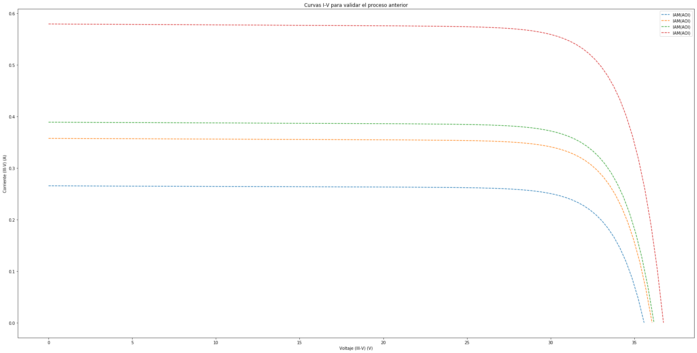
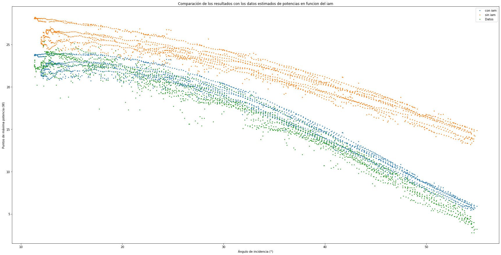
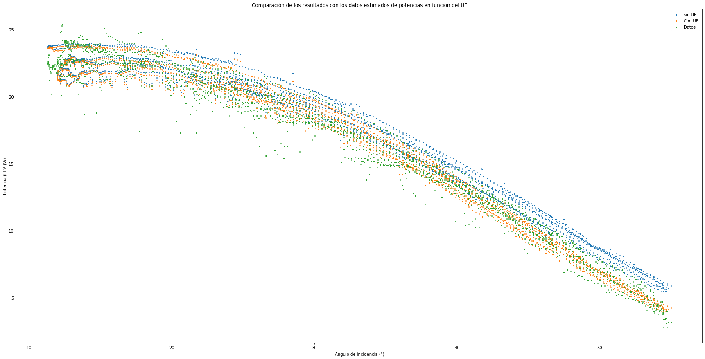
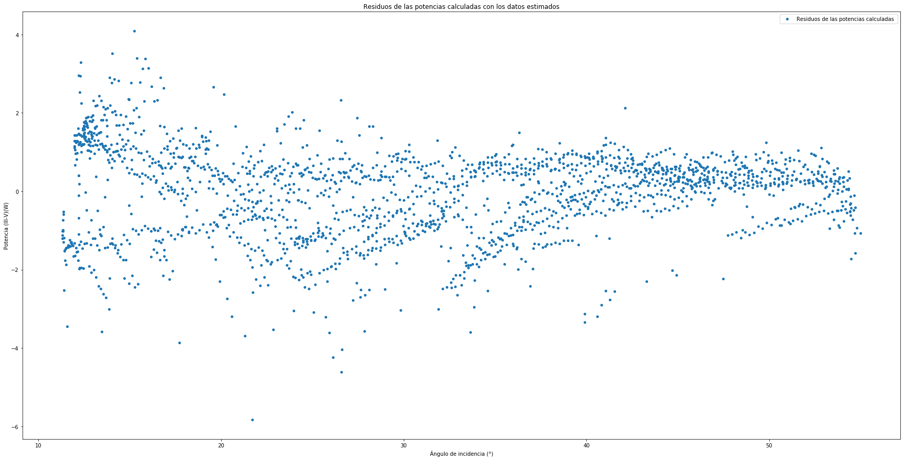
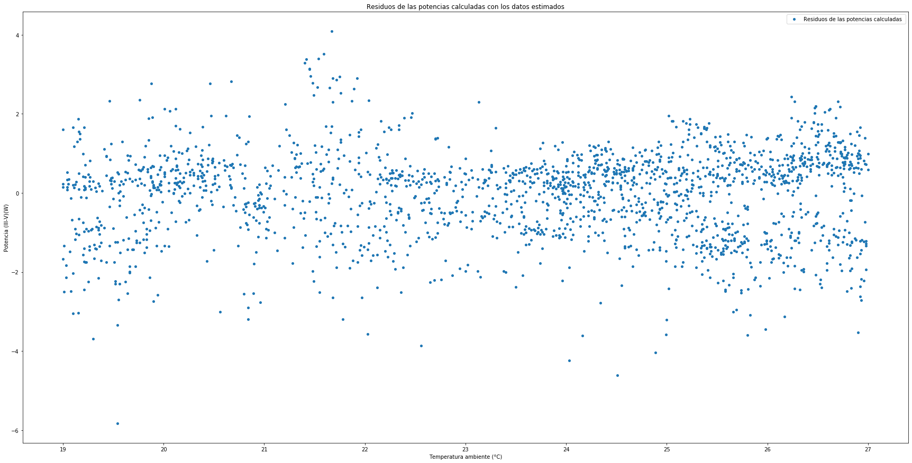
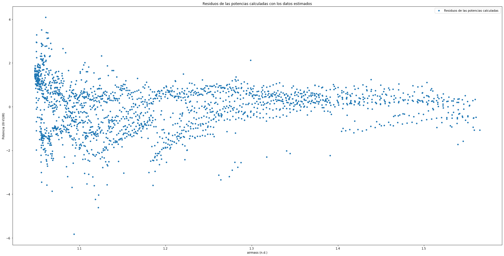

In [44]: runfile('C:/Users/juanj/OneDrive/Escritorio/repositorio_tfg/Static_CPV.py', wdir='C:/Users/juanj/OneDrive/Escritorio/repositorio_tfg')
Reloaded modules: Error
El error cuadrático medio de las estimaciones es de: 1.1044821016106652



In [45]: Curvas['i'].max()
Out[45]: 0.8094872172515956
In [46]: Curvas[np.where(Curvas['i']==Curvas['i'].max())]
Traceback (most recent call last):
File "<ipython-input-46-4daa8b32e0cb>", line 1, in <module>
Curvas[np.where(Curvas['i']==Curvas['i'].max())]
TypeError: unhashable type: 'numpy.ndarray'
In [47]: np.where(Curvas['i']==Curvas['i'].max())
Out[47]: (array([159], dtype=int64), array([0], dtype=int64))
In [48]: Curvas.iloc[np.where(Curvas['i']==Curvas['i'].max())]
Traceback (most recent call last):
File "<ipython-input-48-1ab7de62f82c>", line 1, in <module>
Curvas.iloc[np.where(Curvas['i']==Curvas['i'].max())]
AttributeError: 'collections.OrderedDict' object has no attribute 'iloc'
In [49]: Curvas.loc[np.where(Curvas['i']==Curvas['i'].max())]
Traceback (most recent call last):
File "<ipython-input-49-36fa3aafe4be>", line 1, in <module>
Curvas.loc[np.where(Curvas['i']==Curvas['i'].max())]
AttributeError: 'collections.OrderedDict' object has no attribute 'loc'
In [50]: np.where(Curvas['i']==Curvas['i'].max())
Out[50]: (array([159], dtype=int64), array([0], dtype=int64))
In [51]: np.where(Curvas['i']==Curvas['i'].max()).index
Out[51]: <function tuple.index(value, start=0, stop=9223372036854775807, /)>
In [52]: Curvas[(Curvas['i']==Curvas['i'].max())].index[0]
Traceback (most recent call last):
File "<ipython-input-52-109ab478cf74>", line 1, in <module>
Curvas[(Curvas['i']==Curvas['i'].max())].index[0]
TypeError: unhashable type: 'numpy.ndarray'
In [53]: Curvas[(Curvas['i']==Curvas['i'].max())]
Traceback (most recent call last):
File "<ipython-input-53-1ecc55c1cfc7>", line 1, in <module>
Curvas[(Curvas['i']==Curvas['i'].max())]
TypeError: unhashable type: 'numpy.ndarray'
In [54]: Curvas['i'].max()
Out[54]: 0.8094872172515956
In [55]: Curvas['i']==Curvas['i'].max()
Out[55]:
array([[False, False, False, ..., False, False, False],
[False, False, False, ..., False, False, False],
[False, False, False, ..., False, False, False],
...,
[False, False, False, ..., False, False, False],
[False, False, False, ..., False, False, False],
[False, False, False, ..., False, False, False]])
In [56]: type(Curvas)
Out[56]: collections.OrderedDict
In [57]: np.where(Curvas['i']==Curvas['i'].max())
Out[57]: (array([159], dtype=int64), array([0], dtype=int64))
In [58]: np.where(Curvas['i']==Curvas['i'].max())[0]
Out[58]: array([159], dtype=int64)
In [59]: runfile('C:/Users/juanj/OneDrive/Escritorio/repositorio_tfg/Static_CPV.py', wdir='C:/Users/juanj/OneDrive/Escritorio/repositorio_tfg')
Reloaded modules: Error
Traceback (most recent call last):
File "C:\Users\juanj\OneDrive\Escritorio\repositorio_tfg\Static_CPV.py", line 75, in <module>
Curve=pd.Dateframe()
File "C:\Users\juanj\Anaconda3\lib\site-packages\pandas\__init__.py", line 263, in __getattr__
raise AttributeError(f"module 'pandas' has no attribute '{name}'")
AttributeError: module 'pandas' has no attribute 'Dateframe'
In [60]: runfile('C:/Users/juanj/OneDrive/Escritorio/repositorio_tfg/Static_CPV.py', wdir='C:/Users/juanj/OneDrive/Escritorio/repositorio_tfg')
Reloaded modules: Error
Traceback (most recent call last):
File "C:\Users\juanj\OneDrive\Escritorio\repositorio_tfg\Static_CPV.py", line 75, in <module>
Curve=pd.DateFrame()
File "C:\Users\juanj\Anaconda3\lib\site-packages\pandas\__init__.py", line 263, in __getattr__
raise AttributeError(f"module 'pandas' has no attribute '{name}'")
AttributeError: module 'pandas' has no attribute 'DateFrame'
In [61]: runfile('C:/Users/juanj/OneDrive/Escritorio/repositorio_tfg/Static_CPV.py', wdir='C:/Users/juanj/OneDrive/Escritorio/repositorio_tfg')
Reloaded modules: Error
El error cuadrático medio de las estimaciones es de: 1.1044821016106652


In [62]: Curve
Out[62]:
OrderedDict([('i_sc',
array([0.26542473, 0.27009207, 0.33726189, ..., 0.23656327, 0.22098907,
0.21527674])),
('v_oc',
array([35.58569468, 35.61359614, 35.97264352, ..., 35.19289817,
35.08630353, 35.05392672])),
('i_mp',
array([0.24747151, 0.25185953, 0.31488398, ..., 0.22006304, 0.2054689 ,
0.20015612])),
('v_mp',
array([30.39778253, 30.42161633, 30.74690072, ..., 29.95583173,
29.86509947, 29.83754066])),
('p_mp',
array([7.52258511, 7.66197393, 9.68170634, ..., 6.59217128, 6.13634913,
5.97216644])),
('i_x',
array([0.26334871, 0.26799214, 0.33483407, ..., 0.23464474, 0.21915231,
0.2134698 ])),
('i_xx',
array([0.20017202, 0.20374357, 0.25484644, ..., 0.1774641 , 0.1656462 ,
0.16139609])),
('v',
array([[ 0. , 0.35945146, 0.71890292, ..., 34.86679176,
35.22624322, 35.58569468],
[ 0. , 0.35973329, 0.71946659, ..., 34.89412955,
35.25386285, 35.61359614],
[ 0. , 0.36336004, 0.72672007, ..., 35.24592345,
35.60928349, 35.97264352],
...,
[ 0. , 0.35548382, 0.71096764, ..., 34.48193053,
34.83741435, 35.19289817],
[ 0. , 0.35440711, 0.70881421, ..., 34.37748932,
34.73189642, 35.08630353],
[ 0. , 0.35408007, 0.70816014, ..., 34.34576658,
34.69984665, 35.05392672]])),
('i',
array([[ 2.65424729e-01, 2.65383045e-01, 2.65341360e-01, ...,
8.64175997e-02, 4.75176014e-02, -3.12527781e-14],
[ 2.70092065e-01, 2.70049901e-01, 2.70007737e-01, ...,
8.79714994e-02, 4.83735832e-02, 1.34336986e-14],
[ 3.37261886e-01, 3.37213146e-01, 3.37164406e-01, ...,
1.10409215e-01, 6.07373392e-02, -6.53366250e-14],
...,
[ 2.36563267e-01, 2.36524818e-01, 2.36486368e-01, ...,
7.50433499e-02, 4.11491300e-02, 3.11972670e-14],
[ 2.20989072e-01, 2.20952257e-01, 2.20915442e-01, ...,
7.00208207e-02, 3.83919799e-02, 1.98452366e-14],
[ 2.15276735e-01, 2.15240513e-01, 2.15204291e-01, ...,
6.82437867e-02, 3.74202535e-02, -2.03170814e-14]]))])
In [63]: Curvas[(Curvas['i']==Curvas['i'].max())]
Traceback (most recent call last):
File "<ipython-input-63-1ecc55c1cfc7>", line 1, in <module>
Curvas[(Curvas['i']==Curvas['i'].max())]
TypeError: unhashable type: 'numpy.ndarray'
In [64]: Curvas.iloc[(Curvas['i']==Curvas['i'].max())]
Traceback (most recent call last):
File "<ipython-input-64-49b0fb0a2a10>", line 1, in <module>
Curvas.iloc[(Curvas['i']==Curvas['i'].max())]
AttributeError: 'collections.OrderedDict' object has no attribute 'iloc'
In [65]: Curvas['i'].items()
Traceback (most recent call last):
File "<ipython-input-65-db1ab12527cf>", line 1, in <module>
Curvas['i'].items()
AttributeError: 'numpy.ndarray' object has no attribute 'items'
In [66]: runfile('C:/Users/juanj/OneDrive/Escritorio/repositorio_tfg/Static_CPV.py', wdir='C:/Users/juanj/OneDrive/Escritorio/repositorio_tfg')
Reloaded modules: Error
El error cuadrático medio de las estimaciones es de: 1.1044821016106652
El error cuadrático medio de las estimaciones es de: 1.1044821016106652
El error cuadrático medio de las estimaciones es de: 1.1044821016106652






In [67]: